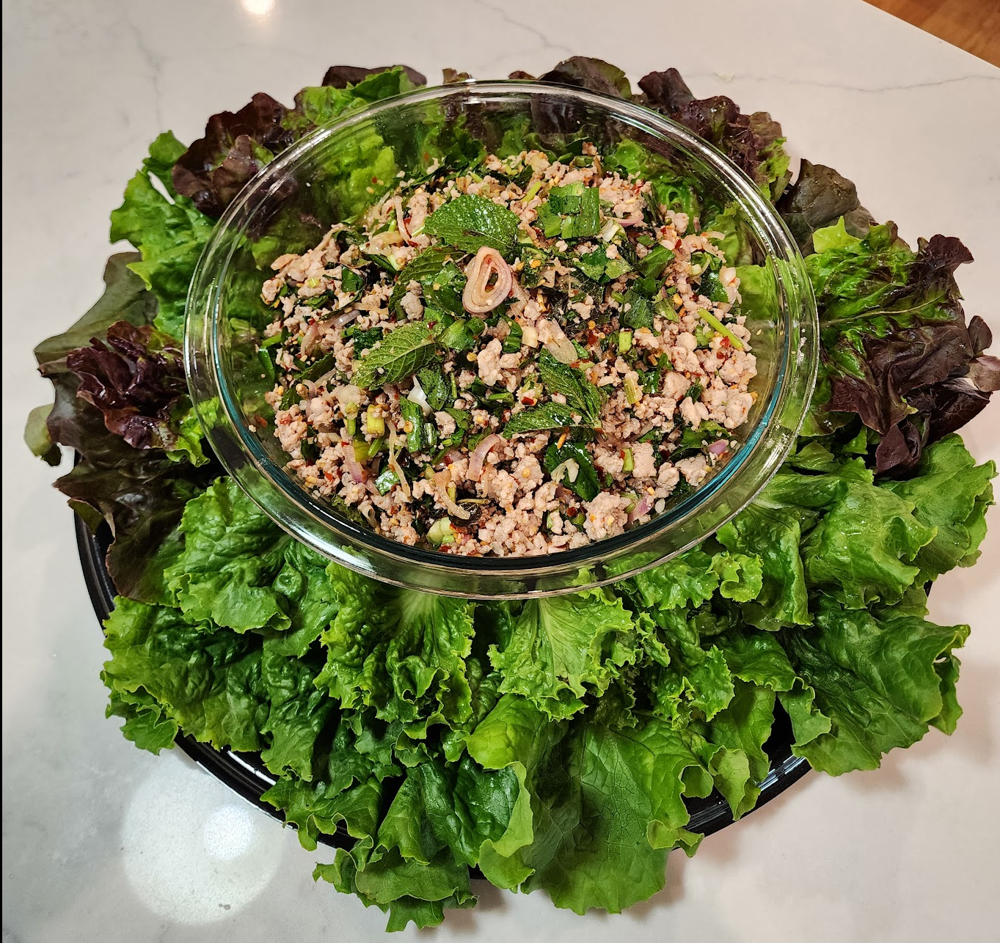

Laab Moo

Ingredients
- 2 lb ground pork
- 2 tbs Jasmine rice
- ½ bunch cilantro, finely chopped
- ½ bunch ngo gai (Culantro or Mexican coriander), finely chopped
- 2-3 shallots, sliced
- Juice of 4 limes (~3 oz)
- 6 tbs seasoning soy sauce
- 6 tbs fish sauce
- 2 tbs sugar
- 2 tbs chili pepper
- 1 tsp chicken bouillon granules
- 1 tbs vegetable stock (if needed)
- 1 head red leaf lettuce
Directions
- Add the rice to an aluminum or stainless steel pan. Toast over low heat until brown. Allow to
cool, transfer to a food processor, and grind into a semi-fine powder. You may also grind the
rice in a mortar and pestle
- Break up the ground pork over medium heat with soy sauce, fish sauce, lime juice, bouillon
granules, and pepper. The goal is to braise the meat rather than fry, so add the vegetable stock
if needed. The end product should be relatively dry, so be judicious.
- When the meat is about 50% cooked, add the cilantro, ngo gai, the ground rice, and shallots.
Continue stirring until the pork is cooked through.
- Transfer to a serving container and serve with red leaf lettuce and glutinous rice
Alternate Directions
- Add the rice to an aluminum or stainless steel pan. Toast over low heat until brown. Allow to
cool, transfer to a food processor, and grind into a semi-fine powder. You may also grind the
rice in a mortar and pestle
- Cook the pork slowly with a little bit of stock. The goal is to braise the meat rather than fry. The
end product should be relatively dry, so be judicious.
- Dry the pork through a fine mesh sieve, and the vegetables, the sauce mixture, lime juice,
bouillon granules, pepper, and ground rice.
- Transfer to a serving container and serve with red leaf lettuce and glutinous rice
Michael Fritsche
mbf@fritsche.org